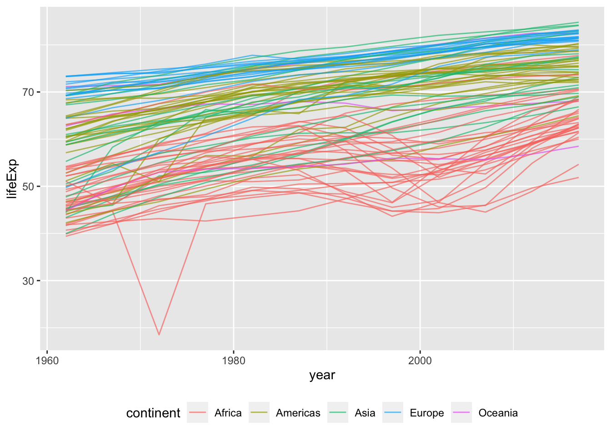
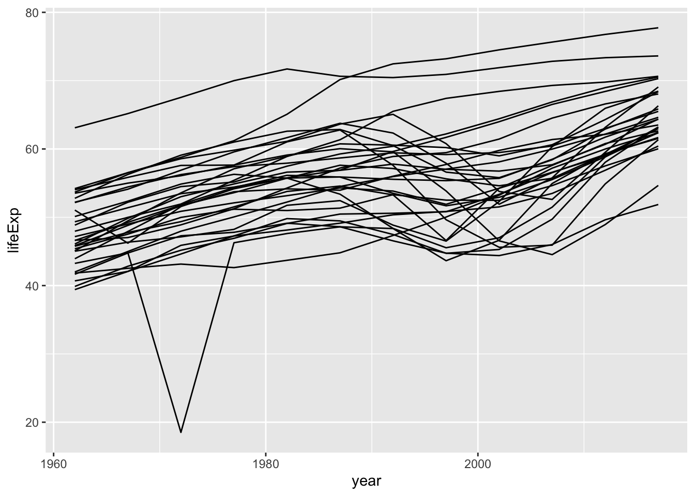
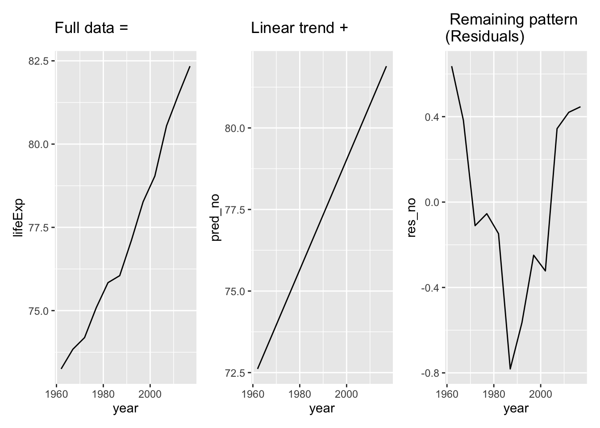
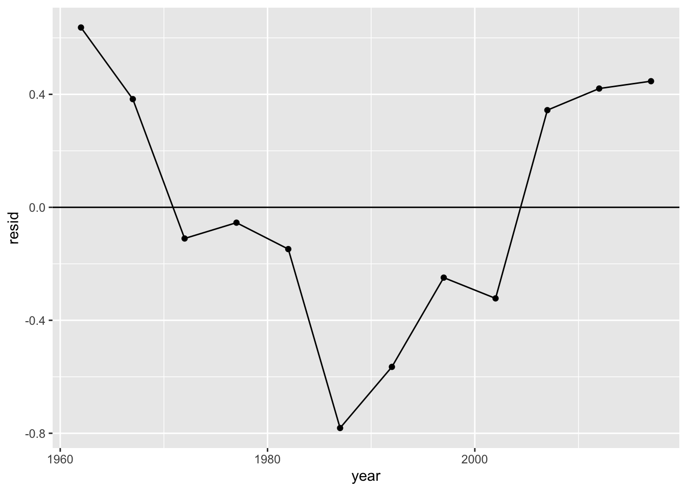
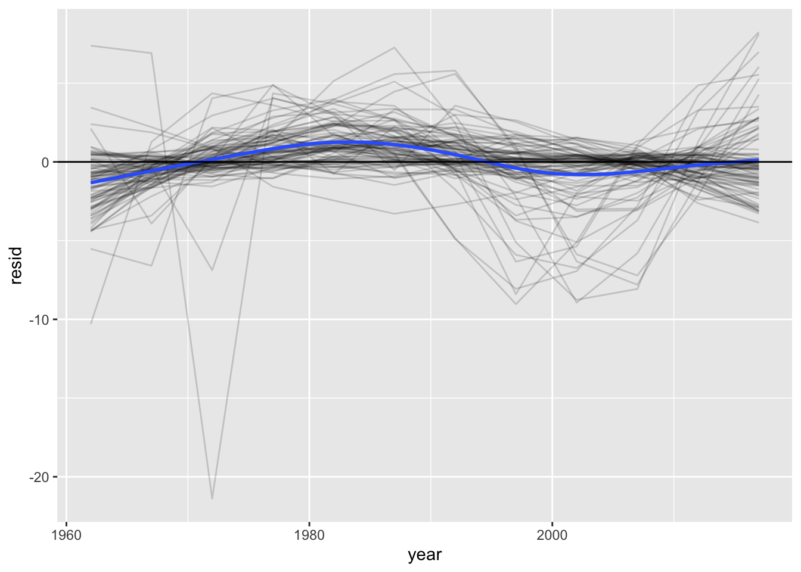
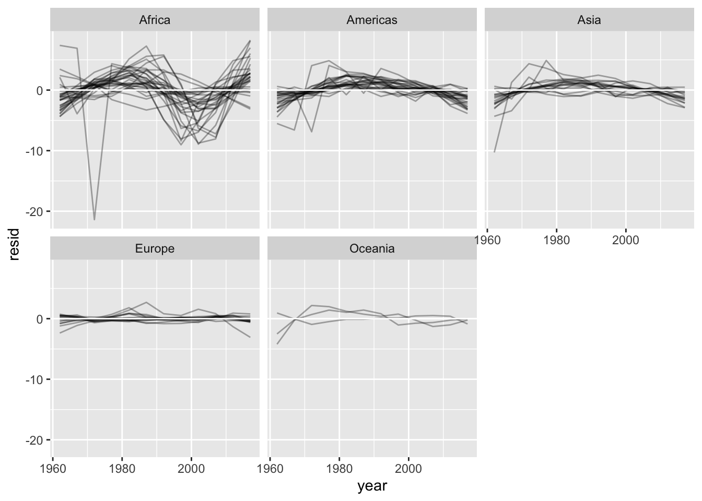
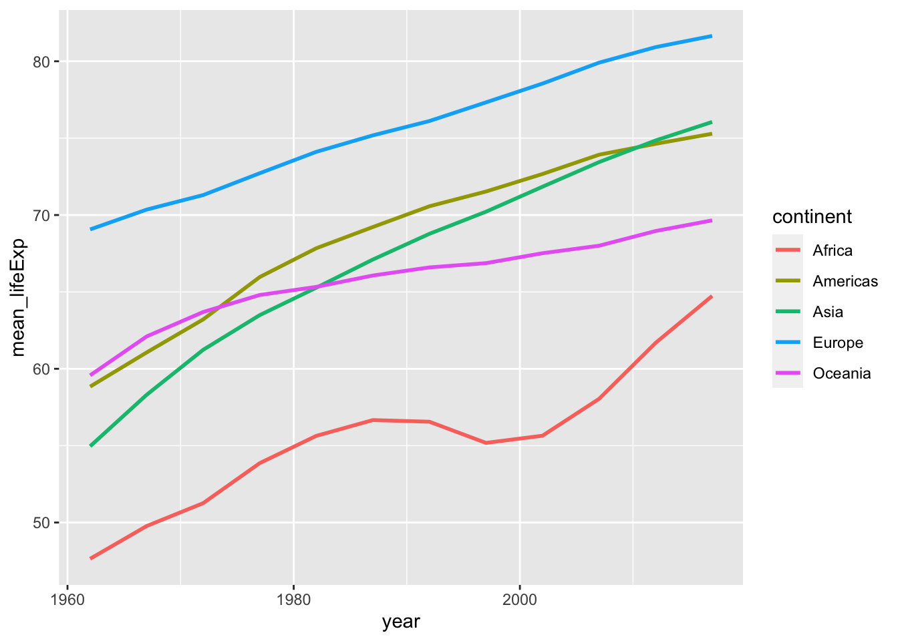
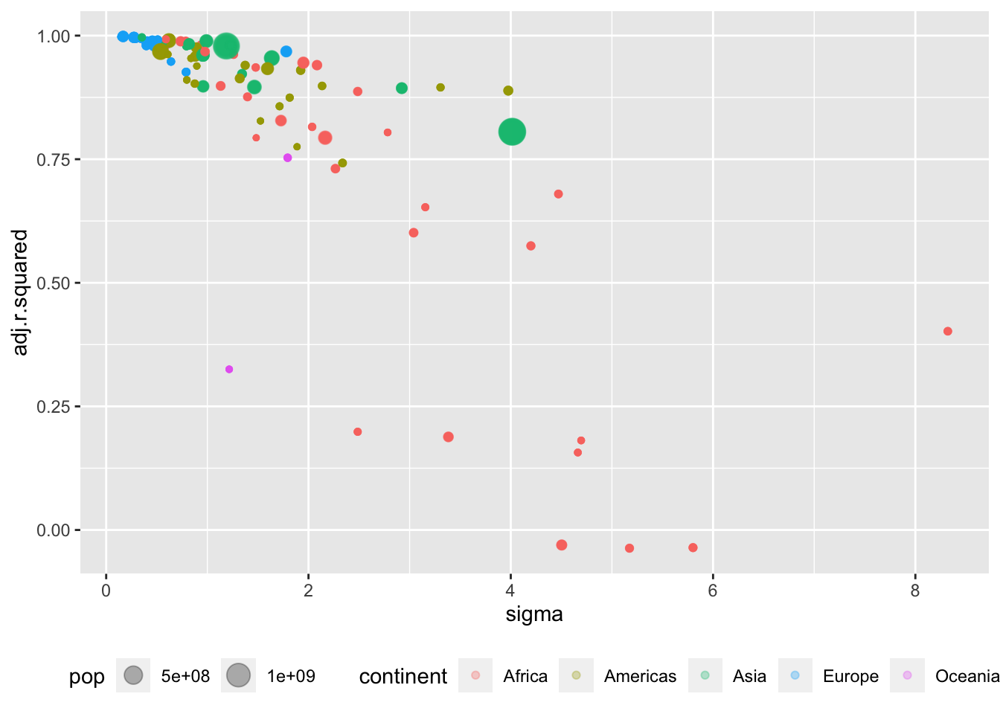
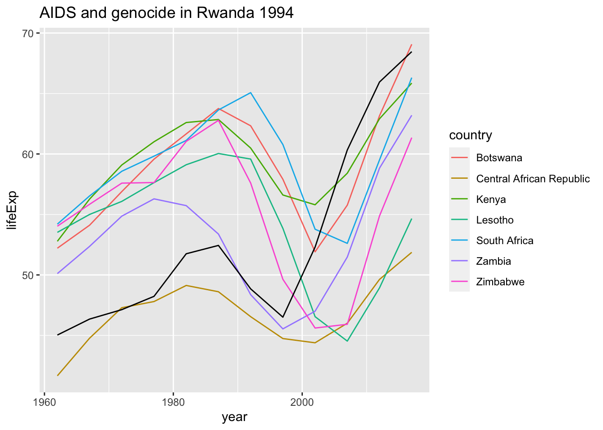

suppressPackageStartupMessages({
library(tidyverse)
library(modelr)
options(na.action = na.exclude)
library(nycflights13)
library(lubridate)
library(tseries)
library(patchwork)
library(broom)
})Many models
# create a bib file for the R packages
# used in this document
# Note! Needs to do a touch ag_many_models.bib in terminal before first run
# else stops when bibliography: "ag_many_models.bib" not found in YAML
knitr::write_bib(
c(
"tidyverse",
"modelr",
"nycflights13",
"lubridate",
"tseries",
"patchwork",
"hexbin"
),
file = "ag_many_models.bib"
)Warning in knitr::write_bib(c("tidyverse", "modelr", "nycflights13",
"lubridate", : package(s) hexbin not foundIntroduction
- Many simple models on complex datasets
- List-columns to store arbitrary data structures in a data frame
- broom package to turn models into tidy data.
- Example gapminder, we will use newgapminder our updated version of the dataset from last assignment
Read in newgapminder
- Our dataset is somewhat smaller than the one in gapminder, but have more updated data
. . .
newgapminder <- read_csv(file = "./newgapminder.csv")Rows: 1080 Columns: 6
── Column specification ────────────────────────────────────────────────────────
Delimiter: ","
chr (2): country, continent
dbl (3): lifeExp, pop, gdpPercap
date (1): year
ℹ Use `spec()` to retrieve the full column specification for this data.
ℹ Specify the column types or set `show_col_types = FALSE` to quiet this message.newgapminder
print(head(newgapminder, n = 20))# A tibble: 20 × 6
country continent year lifeExp pop gdpPercap
<chr> <chr> <date> <dbl> <dbl> <dbl>
1 Argentina Americas 1962-01-01 64.4 21153042 5711.
2 Argentina Americas 1967-01-01 64.9 22828872 6255.
3 Argentina Americas 1972-01-01 66.2 24653172 7369.
4 Argentina Americas 1977-01-01 68.4 26661397 7744.
5 Argentina Americas 1982-01-01 70.8 28794550 7210.
6 Argentina Americas 1987-01-01 72.0 31184411 7294.
7 Argentina Americas 1992-01-01 72.6 33529320 7157.
8 Argentina Americas 1997-01-01 73.5 35657438 8543.
9 Argentina Americas 2002-01-01 74.2 37681743 6854.
10 Argentina Americas 2007-01-01 75.1 39684303 9902.
11 Argentina Americas 2012-01-01 76.0 41755188 10650.
12 Argentina Americas 2017-01-01 76.7 43937143 10404.
13 Australia Oceania 1962-01-01 71.2 10643420 19246.
14 Australia Oceania 1967-01-01 71.3 11899644 22965.
15 Australia Oceania 1972-01-01 71.6 13244163 26794.
16 Australia Oceania 1977-01-01 73.3 14092545 28625.
17 Australia Oceania 1982-01-01 74.8 14979203 30912.
18 Australia Oceania 1987-01-01 76.0 16183159 33127.
19 Australia Oceania 1992-01-01 77.4 17402179 35035.
20 Australia Oceania 1997-01-01 78.6 18387205 40154.Plotting the data for each country
newgapminder %>%
ggplot(aes(year, lifeExp, group = country, colour = continent)) +
geom_line(alpha = 1/3)Plotting the data for each country

Plotting the data for Africa
newgapminder %>%
filter(continent == "Africa") %>%
ggplot(aes(year, lifeExp, group = country)) +
geom_line()Plotting the data for Africa

Simple model
- Remove growth
- Problem: 90 different countries
- Start with one: Norway
. . .
no <- newgapminder %>% filter(country == "Norway")
no_mod = lm(lifeExp ~ year, data = no)
no1 <- no %>%
ggplot(mapping = aes(x = year, y = lifeExp)) +
geom_line() +
ggtitle("Full data =")
no2 <- no %>%
add_predictions(no_mod, var = "pred_no") %>%
ggplot(mapping = aes(x = year, y = pred_no)) +
geom_line() +
ggtitle("Linear trend + ")
no3 <- no %>%
add_residuals(no_mod, var = "res_no") %>%
ggplot(mapping = aes(x = year, y = res_no)) +
geom_line() +
ggtitle(" Residuals")
# since we use package patchwork
no1 + no2 + no3Simple model

Only 89 left to do!
- What can one do?
nest()the data- Common code in a function, map onto each country
- Used to apply function on new variables, now subset of rows (1962 -2017 for 90 different countries)
- Nested data frame:
group_by()first, thennest()
. . .
by_country <- newgapminder %>%
# next a trick to bring with us continent variable
# not needed for the grouping (no two countries with same name)
group_by(country, continent) %>%
nest()Nested dataframes
- That was easy!
- What’s in by_country?
. . .
by_country# A tibble: 90 × 3
# Groups: country, continent [90]
country continent data
<chr> <chr> <list>
1 Argentina Americas <tibble [12 × 4]>
2 Australia Oceania <tibble [12 × 4]>
3 Austria Europe <tibble [12 × 4]>
4 Burundi Africa <tibble [12 × 4]>
5 Belgium Europe <tibble [12 × 4]>
6 Benin Africa <tibble [12 × 4]>
7 Burkina Faso Africa <tibble [12 × 4]>
8 Bangladesh Asia <tibble [12 × 4]>
9 Bahamas Americas <tibble [12 × 4]>
10 Belize Americas <tibble [12 × 4]>
# ℹ 80 more rowsNested dataframes
- country and continent just two normal character vectors.
- data is something new
- It’s a vector of tibbles
- Is that even permissible after R rules?
- It is. It’s just a vector of lists of vectors of equal length
- Remember, a tibble (and dataframe) is nothing but a list of vectors of equal length
- A list is a permissible vector type, and data contains nothing but lists.
- Data is also of the same length as country and continent.
- Everything is in order.
- Every tibble in data has 12 rows and 4 columns
Nested dataframes
- This kind of structure is quite “new”
- No good tools to inspect it
str()tends to give to much info- The best solution is to inspect a single element with
[[]]
. . .
by_country %>%
# pick Norway
filter(country == "Norway") %>%
# pick the data variable for norway
.$data %>%
# we want the content
.[[1]]Nested dataframes
# A tibble: 12 × 4
year lifeExp pop gdpPercap
<date> <dbl> <dbl> <dbl>
1 1962-01-01 73.2 3639213 24912.
2 1967-01-01 73.8 3784867 30311.
3 1972-01-01 74.2 3933726 35368.
4 1977-01-01 75.1 4044335 43237.
5 1982-01-01 75.8 4111650 49046.
6 1987-01-01 76.0 4186972 59392.
7 1992-01-01 77.1 4292685 63630.
8 1997-01-01 78.3 4420266 77045.
9 2002-01-01 79.0 4546017 83674.
10 2007-01-01 80.6 4719403 91566.
11 2012-01-01 81.5 5013716 88605.
12 2017-01-01 82.3 5296324 91549.Nested dataframes
- Standard grouped dataframe
- Each row is an observation
- Nested grouped dataframe
- Each row is a group of observations
More on list-columns
- Define a model function
. . .
country_model <- function(a_df) {
# same simple model for each country
lm(lifeExp ~ year, data = a_df)
}- Want to map this function onto the data for each country
- Store it in
by_countryas the variablemodel
. . .
by_country <- by_country %>%
# remember map(data, function), our data named data
mutate(model = map(data, .f = country_model))print(by_country, n = 3)# A tibble: 90 × 4
# Groups: country, continent [90]
country continent data model
<chr> <chr> <list> <list>
1 Argentina Americas <tibble [12 × 4]> <lm>
2 Australia Oceania <tibble [12 × 4]> <lm>
3 Austria Europe <tibble [12 × 4]> <lm>
# ℹ 87 more rowsSummary of the model for Norway
by_country %>%
# pick Norway
filter(country == "Norway") %>%
# pick the data variable for norway
.$model %>%
# we want the content
.[[1]] %>%
summary()
Call:
lm(formula = lifeExp ~ year, data = a_df)
Residuals:
Min 1Q Median 3Q Max
-0.78146 -0.26734 -0.08243 0.39243 0.63660
Coefficients:
Estimate Std. Error t value Pr(>|t|)
(Intercept) 7.396e+01 2.033e-01 363.76 < 2e-16 ***
year 4.619e-04 2.138e-05 21.61 1.01e-09 ***
---
Signif. codes: 0 '***' 0.001 '**' 0.01 '*' 0.05 '.' 0.1 ' ' 1
Residual standard error: 0.4668 on 10 degrees of freedom
Multiple R-squared: 0.979, Adjusted R-squared: 0.9769
F-statistic: 467 on 1 and 10 DF, p-value: 1.005e-09Coefficients of the model for Norway
by_country %>%
# pick Norway
filter(country == "Norway") %>%
# pick the data variable for norway
.$model %>%
# we want the content
.[[1]] %>%
coefficients() (Intercept) year
7.396322e+01 4.619491e-04 More by_country
by_countrynow contains both data and models for each of the 90 countries- Easy to filter on country or continent
- Will always be kept in sync, just like observations
Adding residuals (and predictions if we want to)
by_country <- by_country %>%
mutate(
# remember map2(var1, var2, function)
# we want to vary data and model
# one combination for each country
#add_residuals(data, model)
res = map2(data, model, add_residuals)
)- Then we have added the residuals for each country to
by_country
How to get things out of their nest?
unnest()- Say we want to see the residuals. How will we get them?
. . .
res_90c <- by_country %>%
unnest(res)
print(res_90c, n = 4)# A tibble: 1,080 × 9
# Groups: country, continent [90]
country continent data model year lifeExp pop gdpPercap resid
<chr> <chr> <list> <list> <date> <dbl> <dbl> <dbl> <dbl>
1 Argentina Americas <tibble> <lm> 1962-01-01 64.4 2.12e7 5711. -0.365
2 Argentina Americas <tibble> <lm> 1967-01-01 64.9 2.28e7 6255. -1.06
3 Argentina Americas <tibble> <lm> 1972-01-01 66.2 2.47e7 7369. -0.945
4 Argentina Americas <tibble> <lm> 1977-01-01 68.4 2.67e7 7744. 0.105
# ℹ 1,076 more rowsResiduals and the variables for Norway
res_90c %>%
filter(country == "Norway") %>%
print(n = 5)# A tibble: 12 × 9
# Groups: country, continent [1]
country continent data model year lifeExp pop gdpPercap resid
<chr> <chr> <list> <list> <date> <dbl> <dbl> <dbl> <dbl>
1 Norway Europe <tibble> <lm> 1962-01-01 73.2 3639213 24912. 0.637
2 Norway Europe <tibble> <lm> 1967-01-01 73.8 3784867 30311. 0.383
3 Norway Europe <tibble> <lm> 1972-01-01 74.2 3933726 35368. -0.110
4 Norway Europe <tibble> <lm> 1977-01-01 75.1 4044335 43237. -0.0544
5 Norway Europe <tibble> <lm> 1982-01-01 75.8 4111650 49046. -0.148
# ℹ 7 more rowsPlot of residuals against year for Norway
res_90c %>%
filter(country == "Norway") %>%
ggplot(mapping = aes(x = year, y = resid)) +
geom_point() +
geom_line() +
geom_hline(yintercept = 0)Plot of residuals against year for Norway

- Shows clear signs of autocorrelation
Plot residuals for all countries
res_90c %>%
ggplot(mapping = aes(x = year, y = resid)) +
# because of group = country one line for each country
geom_line(aes(group = country), alpha = 1/6) +
# general smooth for all countries
geom_smooth(se = FALSE) +
geom_hline(yintercept = 0)Plot residuals for all countries
`geom_smooth()` using method = 'gam' and formula = 'y ~ s(x, bs = "cs")'
Facetting by continent
res_90c %>%
ggplot(mapping = aes(x = year, y = resid)) +
# because of group = country one line for each country
geom_line(aes(group = country), alpha = 1/3) +
geom_hline(yintercept = 0, colour = "white") +
facet_wrap(~continent)Facetting by continent

- Europe is dull, all the action is in Africa.
Mean lifeExp (over country not population) per continent
by_country %>%
unnest(c(data)) %>%
group_by(continent, year) %>%
summarise(mean_lifeExp = mean(lifeExp)
) %>%
ggplot(aes(x = year, y = mean_lifeExp, colour = continent)) +
geom_line(lwd = 1)Mean lifeExp (over country not population) per continent
`summarise()` has grouped output by 'continent'. You can override using the
`.groups` argument.
Model quality
- Filter on a country
- Get model from tibble
- Pick out the lm object and send it to summary
. . .
by_country %>%
filter(country %in% c("Norway")) %>%
.$model %>%
.[[1]] %>%
summary() Model quality cont.
by_country %>%
filter(country %in% c("Norway")) %>%
.$model %>%
.[[1]] %>%
summary()
Call:
lm(formula = lifeExp ~ year, data = a_df)
Residuals:
Min 1Q Median 3Q Max
-0.78146 -0.26734 -0.08243 0.39243 0.63660
Coefficients:
Estimate Std. Error t value Pr(>|t|)
(Intercept) 7.396e+01 2.033e-01 363.76 < 2e-16 ***
year 4.619e-04 2.138e-05 21.61 1.01e-09 ***
---
Signif. codes: 0 '***' 0.001 '**' 0.01 '*' 0.05 '.' 0.1 ' ' 1
Residual standard error: 0.4668 on 10 degrees of freedom
Multiple R-squared: 0.979, Adjusted R-squared: 0.9769
F-statistic: 467 on 1 and 10 DF, p-value: 1.005e-09- Cumbersome
- Package
broomis your friend
Model quality; broom::glance()
options(tibble.width = 60)
by_country %>%
filter(
country %in% c("Norway", "Sweden",
"Denmark", "Finland")
) %>%
.$model %>%
map_df(glance) %>%
print()# A tibble: 4 × 12
r.squared adj.r.squared sigma statistic p.value df
<dbl> <dbl> <dbl> <dbl> <dbl> <dbl>
1 0.952 0.948 0.641 200. 6.20e- 8 1
2 0.994 0.994 0.345 1702. 1.68e-12 1
3 0.979 0.977 0.467 467. 1.01e- 9 1
4 0.998 0.998 0.152 4524. 1.28e-14 1
# ℹ 6 more variables: logLik <dbl>, AIC <dbl>, BIC <dbl>,
# deviance <dbl>, df.residual <int>, nobs <int>Model quality; broom::glance()
- Better solution
- Put model summaries in by_country with
mutate(mod_summary = ) - Then
unnest(mod_summary)
- Put model summaries in by_country with
. . .
by_country %>%
filter(
country %in% c(
"Norway", "Sweden",
"Denmark", "Finland"
)
) %>%
mutate(mod_summary = map(.x = model, .f = glance)) %>%
unnest(mod_summary) %>%
# don't want too many rows in the slide
print(n = 4)Model quality; broom::glance()
by_country %>%
filter(
country %in% c(
"Norway", "Sweden",
"Denmark", "Finland"
)
) %>%
mutate(mod_summary = map(.x = model, .f = glance)) %>%
unnest(mod_summary) %>%
# don't want to may rows in the slide
print(n = 4)# A tibble: 4 × 17
# Groups: country, continent [4]
country continent data model res r.squared
<chr> <chr> <list> <list> <list> <dbl>
1 Denmark Europe <tibble> <lm> <tibble> 0.952
2 Finland Europe <tibble> <lm> <tibble> 0.994
3 Norway Europe <tibble> <lm> <tibble> 0.979
4 Sweden Europe <tibble> <lm> <tibble> 0.998
# ℹ 11 more variables: adj.r.squared <dbl>, sigma <dbl>,
# statistic <dbl>, p.value <dbl>, df <dbl>, logLik <dbl>,
# AIC <dbl>, BIC <dbl>, deviance <dbl>,
# df.residual <int>, nobs <int>Model quality
by_country %>%
mutate(mod_summary = map(.x = model, .f = glance)) %>%
unnest(mod_summary) %>%
group_by(continent) %>%
summarise(mean_r_adj = mean(adj.r.squared))# A tibble: 5 × 2
continent mean_r_adj
<chr> <dbl>
1 Africa 0.655
2 Americas 0.918
3 Asia 0.951
4 Europe 0.982
5 Oceania 0.686- The model seems to have the best fit in Europe
- The worst fit in Africa
Model quality, preserve mod_summary
by_country <- by_country %>%
mutate(mod_summary = map(.x = model, .f = glance))by_country %>%
# drop = TRUE, deprecated, use select() instead
select(-data, -model, -res) %>%
# new interface, wrap in c()
unnest(c(mod_summary)) %>%
print(n = 4)# A tibble: 90 × 14
# Groups: country, continent [90]
country continent r.squared adj.r.squared sigma statistic
<chr> <chr> <dbl> <dbl> <dbl> <dbl>
1 Argenti… Americas 0.962 0.958 0.882 252.
2 Austral… Oceania 0.983 0.981 0.589 581.
3 Austria Europe 0.991 0.990 0.441 1052.
4 Burundi Africa 0.456 0.402 8.32 8.40
# ℹ 86 more rows
# ℹ 8 more variables: p.value <dbl>, df <dbl>,
# logLik <dbl>, AIC <dbl>, BIC <dbl>, deviance <dbl>,
# df.residual <int>, nobs <int>The 10 best models
by_country %>%
# drop = TRUE, deprecated, use select() instead
select(-data, -model, -res) %>%
# new interface, wrap in c()
unnest(c(mod_summary)) %>%
arrange(desc(adj.r.squared)) %>%
print(n = 10)# A tibble: 90 × 14
# Groups: country, continent [90]
country continent r.squared adj.r.squared sigma statistic
<chr> <chr> <dbl> <dbl> <dbl> <dbl>
1 France Europe 0.998 0.998 0.168 6500.
2 Sweden Europe 0.998 0.998 0.152 4524.
3 Singap… Asia 0.997 0.997 0.353 3183.
4 Italy Europe 0.997 0.996 0.274 3076.
5 Bolivia Americas 0.996 0.995 0.634 2215.
6 Belgium Europe 0.995 0.994 0.293 1866.
7 Finland Europe 0.994 0.994 0.345 1702.
8 Luxemb… Europe 0.993 0.993 0.370 1486.
9 Haiti Americas 0.993 0.993 0.613 1483.
10 Maurit… Africa 0.993 0.992 0.590 1453.
# ℹ 80 more rows
# ℹ 8 more variables: p.value <dbl>, df <dbl>,
# logLik <dbl>, AIC <dbl>, BIC <dbl>, deviance <dbl>,
# df.residual <int>, nobs <int>The 10 worst models
by_country %>%
# drop = TRUE, deprecated, use select() instead
select(-data, -model, -res) %>%
# new interface, wrap in c()
unnest(c(mod_summary)) %>%
arrange(adj.r.squared) %>%
print(n = 10)# A tibble: 90 × 14
# Groups: country, continent [90]
country continent r.squared adj.r.squared sigma statistic
<chr> <chr> <dbl> <dbl> <dbl> <dbl>
1 Zambia Africa 0.0574 -0.0369 5.17 0.609
2 Zimbab… Africa 0.0585 -0.0357 5.80 0.621
3 South … Africa 0.0633 -0.0304 4.50 0.675
4 Lesotho Africa 0.233 0.157 4.66 3.04
5 Botswa… Africa 0.256 0.181 4.70 3.43
6 Kenya Africa 0.262 0.188 3.38 3.55
7 Centra… Africa 0.271 0.199 2.49 3.73
8 Fiji Oceania 0.386 0.325 1.22 6.30
9 Burundi Africa 0.456 0.402 8.32 8.40
10 Malawi Africa 0.613 0.575 4.20 15.9
# ℹ 80 more rows
# ℹ 8 more variables: p.value <dbl>, df <dbl>,
# logLik <dbl>, AIC <dbl>, BIC <dbl>, deviance <dbl>,
# df.residual <int>, nobs <int>Plot adj.r.square and sigma by continent
by_country %>%
# unnest data to get to pop
unnest(c(data, mod_summary)) %>%
ggplot(mapping = aes(x = sigma, y = adj.r.squared,
colour = continent, size = pop)) +
geom_point(alpha = 0.3) +
theme(legend.position = "bottom")Plot adj.r.square and sigma by continent

Plot of the worst fits
# Special case Rwanda
rw <- by_country %>% filter(country == "Rwanda") %>% unnest(c(data,mod_summary))
by_country %>%
# unnest data to get to pop
unnest(c(data, mod_summary)) %>%
filter(continent == "Africa") %>%
filter(adj.r.squared < 0.25) %>%
ggplot(mapping = aes(x = year, y = lifeExp, colour = country)) +
geom_line(lwd=1) +
geom_line(data = rw, mapping = aes(x = year, y = lifeExp), colour = "black", lwd=1) +
ggtitle("AIDS and genocide in Rwanda 1994")Plot of the worst fits

Difference 2007 2017
- Compare previous figure with a similar one in r4ds 25.2.4
- What do we see?
- The effect of cheap and available AIDS drugs (from 2000-)
Details list-columns
- data frame: a named list of equal length vectors
- A list is one of Rs vector types
- Always been permissible to have a list of dataframes as a vector in a dataframe
- Not easy in classic R
- New tools make it a lot easier
How classic Rs data.frame() function handles a list of vectors
# we want a list with two vectors
data.frame(x = list(1:3, 3:5)) x.1.3 x.3.5
1 1 3
2 2 4
3 3 5- Get two columns
- Can force the matter with
I()
. . .
# I() Inhibit Interpretation/Conversion of Objects
a_df <- data.frame(x = I(list(1:3, 3:5)))
a_df x
1 1, 2, 3
2 3, 4, 5a_df$x[[1]][1] 1 2 3a_df$x[[2]][1] 3 4 5Not a problem with tribbles/tibbels
tibble(x = list(1:3, 3:5))# A tibble: 2 × 1
x
<list>
1 <int [3]>
2 <int [3]>tribble(
~x,
1:3,
3:5
)# A tibble: 2 × 1
x
<list>
1 <int [3]>
2 <int [3]>tribble()even makes a list for us- List-columns handy for storing things, but we typically need to “unpack” them before use
- Remember: Most R functions work with vectors and/or dataframes
List-column pipe line
- Create
nest()
summarise() + list()
mutate() + map()
- Make additional list-columns by transforming existing list-columns with
map(),
map2() or
pmap().
- Ex. transforming a list-column of dataframes (with data) to a list-column of models.
List-column pipe line cont.
- Then further transforming a list-column of models to a listcolumn of model summaries
- Finally one simplify list-columns back to vector or dataframes ready to use by regular R functions
mutate()withmap_chr(),map_lgl(),map_int()andmap_dbl()
unnest(c(list-column1, list-column2, etc.)). - Note you now have to usec()even with one list-column.
. . .
- Option `drop = TRUE` is now depricated.
- Use `select(-list-column, etc)` before `unnest()` if you want to
drop some columns.List to vector
- Get type and length, always works
- Useful for
filter()
. . .
# all sorts
a_trib <- tribble(
~x,
letters[1:5],
1:3,
runif(5)
)
a_trib %>% mutate(
# if we use plain map we get a list. NOT what we want.
type = map_chr(.x = x, .f = typeof),
length = map_int(.x = x, .f = length)
)# A tibble: 3 × 3
x type length
<list> <chr> <int>
1 <chr [5]> character 5
2 <int [3]> integer 3
3 <dbl [5]> double 5List to vector
a_trib %>% mutate(
# if we use plain map we get a list. NOT what we want.
type = map_chr(.x = x, .f = typeof),
length = map_int(.x = x, .f = length)
) %>%
filter(length == 5)# A tibble: 2 × 3
x type length
<list> <chr> <int>
1 <chr [5]> character 5
2 <dbl [5]> double 5a_trib %>% mutate(
# if we use plain map we get a list. NOT what we want.
type = map_chr(.x = x, .f = typeof),
length = map_int(.x = x, .f = length)
) %>%
filter(type == "double")# A tibble: 1 × 3
x type length
<list> <chr> <int>
1 <dbl [5]> double 5List to vector
- Use argument
.null =to provide for missing values
. . .
a_trib <- tribble(
~x,
list(a = 1, b = 2),
list(a = 2, c = 4)
)
a_trib# A tibble: 2 × 1
x
<list>
1 <named list [2]>
2 <named list [2]>List to vector
a_trib %>% mutate(
# pick the values for a's
a = map_dbl(x, "a"),
#pick the values b's, NA_real_ if missing.
# No b in the second list
b = map_dbl(x, "b", .null = NA_real_)
)# A tibble: 2 × 3
x a b
<list> <dbl> <dbl>
1 <named list [2]> 1 2
2 <named list [2]> 2 NAunnest()
- Repeats the regular columns once for each element of the list-column.
. . .
a_tib <- tibble(x = 1:2, y = list(1:4, 1))
a_tib# A tibble: 2 × 2
x y
<int> <list>
1 1 <int [4]>
2 2 <dbl [1]>a_tib %>% unnest(c(y))# A tibble: 5 × 2
x y
<int> <dbl>
1 1 1
2 1 2
3 1 3
4 1 4
5 2 1unnest()
a_tib <- tibble(x = list(1:2, 1:5), y = list(1:4, 1))
a_tib# A tibble: 2 × 2
x y
<list> <list>
1 <int [2]> <int [4]>
2 <int [5]> <dbl [1]>a_tib %>% unnest(c(y))# A tibble: 5 × 2
x y
<list> <dbl>
1 <int [2]> 1
2 <int [2]> 2
3 <int [2]> 3
4 <int [2]> 4
5 <int [5]> 1unnest()
a_tib %>% unnest(c(x))# A tibble: 7 × 2
x y
<int> <list>
1 1 <int [4]>
2 2 <int [4]>
3 1 <dbl [1]>
4 2 <dbl [1]>
5 3 <dbl [1]>
6 4 <dbl [1]>
7 5 <dbl [1]># Does not work, different number of elements in rows
a_tib %>% unnest(c(x, y))Returns: Error: Incompatible lengths: 2, 4. Run rlang::last_error() to see where the error occurred.
unnest()
a_tib <- tibble(x = list(1:2, 1:3), y = list(10:11, 1))
a_tib# A tibble: 2 × 2
x y
<list> <list>
1 <int [2]> <int [2]>
2 <int [3]> <dbl [1]># same number of elemets or vector of length 1
a_tib %>% unnest(c(x, y))# A tibble: 5 × 2
x y
<int> <dbl>
1 1 10
2 2 11
3 1 1
4 2 1
5 3 1- Same with list-columns of dataframes. You can unnest multiple list columns, but the data frames in each row must have the same number of rows.
More from broom
- We used
broom::glance(model)above. - We also have:
broom::tidy(model)andbroom:augment(model, data)
Tidy data with broom
- Gives us model coefficients and accompanying statistics
. . .
by_country <- by_country %>%
mutate(mod_tidy = map(.x = model, .f = tidy))by_country %>%
select(-data, -res, -mod_summary) %>%
unnest(mod_tidy) %>%
print(n = 4)# A tibble: 180 × 8
# Groups: country, continent [90]
country continent model term estimate std.error statistic
<chr> <chr> <lis> <chr> <dbl> <dbl> <dbl>
1 Argent… Americas <lm> (Int… 6.67e+1 0.384 174.
2 Argent… Americas <lm> year 6.41e-4 0.0000404 15.9
3 Austra… Oceania <lm> (Int… 7.21e+1 0.256 281.
4 Austra… Oceania <lm> year 6.50e-4 0.0000270 24.1
# ℹ 176 more rows
# ℹ 1 more variable: p.value <dbl>Tidy data with broom
- Now we can do things like
. . .
by_country <- by_country %>%
mutate(
new18 = map(c(ymd("2018-01-01")), as_tibble_col, column_name = "year"),
pred18 = map2(model, new18, predict.lm)
)
by_country %>%
group_by(continent) %>%
unnest(pred18 ) %>%
summarise(mean_p18 = mean(pred18),
sd_p18 = sd(pred18),
min_p18 = min(pred18),
max_p18 = max(pred18))# A tibble: 5 × 5
continent mean_p18 sd_p18 min_p18 max_p18
<chr> <dbl> <dbl> <dbl> <dbl>
1 Africa 62.5 7.01 49.2 81.1
2 Americas 77.2 4.26 65.1 84.8
3 Asia 77.6 6.23 67.0 85.7
4 Europe 82.2 0.962 80.1 83.9
5 Oceania 70.2 12.4 58.9 83.5broom:augment()
augment()gives us a lot of goodies regarding the model
. . .
by_country <- by_country %>%
mutate(mod_aug = map(.x = model, .f = augment))by_country %>%
select(-data, -res, -mod_summary, -mod_tidy, -c(model:pred18)) %>%
unnest(mod_aug) %>%
print(n = 4)# A tibble: 1,080 × 10
# Groups: country, continent [90]
country continent lifeExp year .fitted .resid .hat
<chr> <chr> <dbl> <date> <dbl> <dbl> <dbl>
1 Argenti… Americas 64.4 1962-01-01 64.8 -0.365 0.295
2 Argenti… Americas 64.9 1967-01-01 66.0 -1.06 0.225
3 Argenti… Americas 66.2 1972-01-01 67.1 -0.945 0.169
4 Argenti… Americas 68.4 1977-01-01 68.3 0.105 0.127
# ℹ 1,076 more rows
# ℹ 3 more variables: .sigma <dbl>, .cooksd <dbl>,
# .std.resid <dbl>Still more broom!
- To learn more have a look at the broom package vignettes.
- Find broom under packages and click the link
- Links to the vignettes are at the top of the page
References
Grolemund, Garrett, and Hadley Wickham. 2011. “Dates and Times Made Easy with lubridate.” Journal of Statistical Software 40 (3): 1–25. https://www.jstatsoft.org/v40/i03/.
Pedersen, Thomas Lin. 2022. Patchwork: The Composer of Plots. https://CRAN.R-project.org/package=patchwork.
Spinu, Vitalie, Garrett Grolemund, and Hadley Wickham. 2023. Lubridate: Make Dealing with Dates a Little Easier. https://CRAN.R-project.org/package=lubridate.
Trapletti, Adrian, and Kurt Hornik. 2023. Tseries: Time Series Analysis and Computational Finance. https://CRAN.R-project.org/package=tseries.
Wickham, Hadley. 2021. Nycflights13: Flights That Departed NYC in 2013. https://github.com/hadley/nycflights13.
———. 2023a. Modelr: Modelling Functions That Work with the Pipe. https://CRAN.R-project.org/package=modelr.
———. 2023b. Tidyverse: Easily Install and Load the Tidyverse. https://CRAN.R-project.org/package=tidyverse.
Wickham, Hadley, Mara Averick, Jennifer Bryan, Winston Chang, Lucy D’Agostino McGowan, Romain François, Garrett Grolemund, et al. 2019. “Welcome to the tidyverse.” Journal of Open Source Software 4 (43): 1686. https://doi.org/10.21105/joss.01686.